CODING AGENTS AS PIXEL WORLD MODELS
traex/DeepSeek-V4.1-Flash · 0166
点击播放 · 原生 RGB 像素
逐轮保存的候选
回放视频、检查图与代码变化。
每份候选均可单独播放。实际图片检查记录在下方工具轨迹中。
候选 01播放与检查图
点击播放 · 原生 RGB 像素

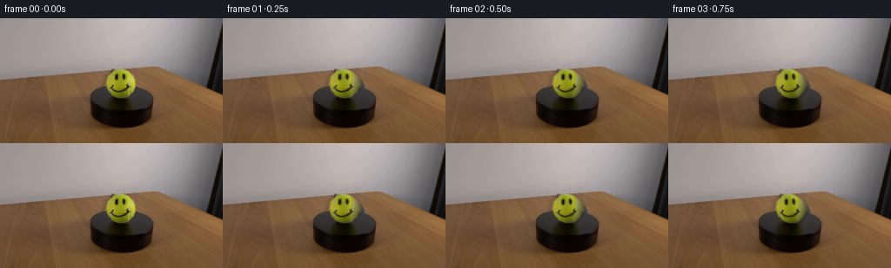
展开代码变化
--- 上一保存版本 +++ 本次保存版本 @@ -0,0 +1,137 @@ +from pathlib import Path + +import cv2 +import numpy as np + +import artifact_io + + +CASE_DIR = Path(__file__).resolve().parent +WIDTH, HEIGHT = 256, 144 +FRAME_COUNT = 20 +FPS = 4 + +# The ball silhouette measured from the supplied frame. +CX, CY, RADIUS = 138.5, 83.5, 25.8 + + +def smoothstep(edge0, edge1, values): + t = np.clip((values - edge0) / (edge1 - edge0), 0.0, 1.0) + return t * t * (3.0 - 2.0 * t) + + +def sphere_light(normals): + light = np.array([-0.55, -0.58, 0.60], dtype=np.float32) + light /= np.linalg.norm(light) + diffuse = np.clip(np.sum(normals * light, axis=2), 0.0, 1.0) + return 0.28 + 0.78 * diffuse + + +def rotate_y(normals, angle): + c, s = np.cos(angle), np.sin(angle) + x = normals[..., 0] + y = normals[..., 1] + z = normals[..., 2] + return np.stack((c * x - s * z, y, s * x + c * z), axis=2) + + +def make_frames(first_frame): + image = first_frame.astype(np.float32) + yy, xx = np.mgrid[0:HEIGHT, 0:WIDTH].astype(np.float32) + px = (xx - CX) / RADIUS + py = (yy - CY) / RADIUS + rho2 = px * px + py * py + disk = rho2 <= 1.0 + normals = np.zeros((HEIGHT, WIDTH, 3), dtype=np.float32) + normals[..., 0] = px + normals[..., 1] = py + normals[..., 2] = np.sqrt(np.clip(1.0 - rho2, 0.0, 1.0)) + + original_shade = sphere_light(normals) + original_albedo = image / original_shade[..., None] + original_albedo = np.clip(original_albedo, 0.0, 255.0) + + # Preserve the felt grain while preventing isolated highlight pixels from + # becoming very bright when the texture is relit. + original_albedo = np.minimum(original_albedo, 232.0) + + # Fine deterministic grain that rotates with the sphere. + h = np.sin(px * 91.7 + py * 137.3) * np.sin(px * 53.1 - py * 79.9) + h += 0.55 * np.sin(px * 211.7 + py * 173.9) + grain = (h * 2.4)[..., None] + + map_x = np.clip(CX + RADIUS * px, 0.0, WIDTH - 1.0).astype(np.float32) + map_y = np.clip(CY + RADIUS * py, 0.0, HEIGHT - 1.0).astype(np.float32) + edge_weight = smoothstep(1.015, 0.88, np.sqrt(rho2)) + edge_weight *= disk.astype(np.float32) + + frames = [] + max_angle = np.deg2rad(-36.0) + + for frame_index in range(FRAME_COUNT): + if frame_index == 0: + frames.append(first_frame.copy()) + continue + + progress = frame_index / (FRAME_COUNT - 1) + # A small ease-in keeps the first movement natural while the remaining + # rotation stays close to constant angular velocity. + eased = progress * progress * (3.0 - 2.0 * progress) + blend = 0.18 * eased + 0.82 * progress + angle = max_angle * blend + + object_normals = rotate_y(normals, -angle) + sample_x = CX + RADIUS * object_normals[..., 0] + sample_y = CY + RADIUS * object_normals[..., 1] + sample_x = np.clip(sample_x, 0.0, WIDTH - 1.0).astype(np.float32) + sample_y = np.clip(sample_y, 0.0, HEIGHT - 1.0).astype(np.float32) + + sampled = cv2.remap( + original_albedo, + sample_x, + sample_y, + interpolation=cv2.INTER_LINEAR, + borderMode=cv2.BORDER_REPLICATE, + ) + + # The unseen rear hemisphere borrows the quiet felt near the opposite + # limb, then receives slightly stronger procedural grain. + rear = object_normals[..., 2] < 0.0 + mirror = cv2.remap( + original_albedo, + map_x, + map_y, + interpolation=cv2.INTER_LINEAR, + borderMode=cv2.BORDER_REPLICATE, + ) + rear_mix = smoothstep(0.10, -0.10, object_normals[..., 2]) + rear_color = 0.68 * mirror + 0.32 * np.array([181.0, 190.0, 48.0]) + sampled = sampled * (1.0 - rear_mix[..., None]) + rear_color * rear_mix[..., None] + sampled = sampled + grain * (0.55 + 0.45 * rear_mix[..., None]) + + relit = sampled * sphere_light(normals)[..., None] + + # A soft contact darkening at the lower rim matches the original + # bounce-light falloff where the ball meets the platform. + contact = smoothstep(0.42, 1.0, py) + relit *= (1.0 - 0.16 * contact)[..., None] + + rendered = image.copy() + composed = relit * edge_weight[..., None] + image * (1.0 - edge_weight[..., None]) + rendered[disk] = composed[disk] + frames.append(np.clip(np.rint(rendered), 0.0, 255.0).astype(np.uint8)) + + return np.stack(frames) + + +def main(): + first_frame = cv2.cvtColor(cv2.imread(str(CASE_DIR / "first_frame.png")), cv2.COLOR_BGR2RGB) + assert first_frame.shape == (HEIGHT, WIDTH, 3) + frames = make_frames(first_frame) + assert frames.shape == (FRAME_COUNT, HEIGHT, WIDTH, 3) + assert np.array_equal(frames[0], first_frame) + artifact_io.save(frames, CASE_DIR) + + +if __name__ == "__main__": + main()
候选 02播放与检查图
点击播放 · 原生 RGB 像素

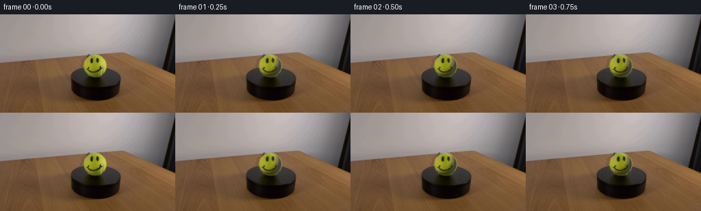
展开代码变化
--- 上一保存版本 +++ 本次保存版本 @@ -11,8 +11,9 @@ FRAME_COUNT = 20 FPS = 4 -# The ball silhouette measured from the supplied frame. -CX, CY, RADIUS = 138.5, 83.5, 25.8 +# The ball silhouette measured from the supplied frame. The lower limb meets +# the platform near y=92, so only this compact sphere is replaced. +CX, CY, RADIUS = 138.5, 75.0, 17.0 def smoothstep(edge0, edge1, values):
候选 03播放与检查图
点击播放 · 原生 RGB 像素
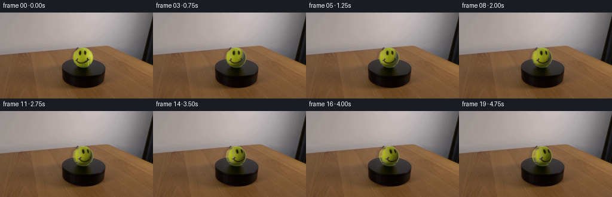
展开代码变化
--- 上一保存版本
+++ 本次保存版本
@@ -96,8 +96,9 @@
)
# The unseen rear hemisphere borrows the quiet felt near the opposite
- # limb, then receives slightly stronger procedural grain.
- rear = object_normals[..., 2] < 0.0
+ # limb, then receives slightly stronger procedural grain. Keep the
+ # transition late enough that the printed features remain rigid at the
+ # silhouette instead of smearing around the limb.
mirror = cv2.remap(
original_albedo,
map_x,
@@ -105,7 +106,7 @@
interpolation=cv2.INTER_LINEAR,
borderMode=cv2.BORDER_REPLICATE,
)
- rear_mix = smoothstep(0.10, -0.10, object_normals[..., 2])
+ rear_mix = smoothstep(-0.02, -0.22, object_normals[..., 2])
rear_color = 0.68 * mirror + 0.32 * np.array([181.0, 190.0, 48.0])
sampled = sampled * (1.0 - rear_mix[..., None]) + rear_color * rear_mix[..., None]
sampled = sampled + grain * (0.55 + 0.45 * rear_mix[..., None])
可观测工具轨迹
实际执行的命令与返回图片。
命令 1exit 0
/bin/bash -c "pwd && rg --files -g 'prompt.txt' -g 'GENERATION_RULES.md' -g '"'!*.png'"' -g '"'!*.mp4'"'"
命令 2exit 0
/bin/bash -c "ls -la && find . -maxdepth 2 -type f | sort | sed -n '1,200p'"
命令 3exit 0
/bin/bash -c 'cat prompt.txt'
命令 4exit 0
/bin/bash -c 'cat GENERATION_RULES.md'
命令 5exit 0
/bin/bash -c "sed -n '1,260p' artifact_io.py"
命令 6exit 0
/bin/bash -c "sed -n '1,260p' player_template.html"
命令 7exit 0
/bin/bash -c "python - <<'PY'
from PIL import Image
im=Image.open('first_frame.png').convert('RGB')
print(im.size)
im.crop((100,35,175,110)).resize((600,600), Image.Resampling.NEAREST).save('.tmp/ball_crop.png')
PY"命令 8exit 0
/bin/bash -c 'ffmpeg -version | head -n 2; ffprobe -version | head -n 1'
命令 9exit 0
/bin/bash -c "python - <<'PY' mods=['numpy','PIL','cv2','scipy','skimage'] for m in mods: try: x=__import__(m); print(m, getattr(x,'__version__','ok')) except Exception as e: print(m,'MISSING',e) PY"
命令 10exit 0
/bin/bash -c "python - <<'PY'
import cv2, numpy as np
im=cv2.imread('first_frame.png')
hsv=cv2.cvtColor(im, cv2.COLOR_BGR2HSV)
# print bounding bright green
mask=(hsv[:,:,0]>20)&(hsv[:,:,0]<50)&(hsv[:,:,1]>90)&(hsv[:,:,2]>80)
ys,xs=np.where(mask)
print(xs.min(),xs.max(),ys.min(),ys.max(),len(xs))
# weighted centroid/bbox per row/col
for y in range(45,91):
xs2=np.where(mask[y])[0]
if len(xs2): print(y,xs2.min(),xs2.max(),len(xs2))
PY"命令 11exit 0
/bin/bash -c "python - <<'PY'
from PIL import Image
im=Image.open('first_frame.png')
im.crop((112,50,164,100)).resize((520,500), Image.Resampling.NEAREST).save('.tmp/ball_exact.png')
PY"命令 12exit 0
/bin/bash -c "python - <<'PY'
import cv2, numpy as np
im=cv2.imread('first_frame.png')
# colors around ball grid from x 118..160 y55..95
for y in [55,56,57,58,59,60,61,62,63,64,65,66,67,68,69,70,75,80,85,90,91,92,93]:
print(y, [(x, tuple(int(v) for v in im[y,x][::-1])) for x in range(118,161,4)])
PY"命令 13exit 0
/bin/bash -c "python - <<'PY'
import cv2, numpy as np
im=cv2.imread('first_frame.png')
# threshold saturated pixels around ball
hsv=cv2.cvtColor(im,cv2.COLOR_BGR2HSV)
# BGR inspect center
for y in range(56,96):
xs=np.where((hsv[y,:,1]>75)&(hsv[y,:,0]>18)&(hsv[y,:,0]<55)&(np.arange(256)>105)&(np.arange(256)<170))[0]
if len(xs): print(y,int(xs.min()),int(xs.max()),len(xs))
PY"命令 14exit 0
/bin/bash -c "python - <<'PY'
import cv2, numpy as np
im=cv2.imread('first_frame.png')
hsv=cv2.cvtColor(im,cv2.COLOR_BGR2HSV)
mask=((hsv[:,:,1]>65)&(hsv[:,:,0]>18)&(hsv[:,:,0]<55)).astype(np.uint8)
# only near ball, connected comps
n,lab,stats,cent=cv2.connectedComponentsWithStats(mask,8)
for i in range(1,n):
x,y,w,h,a=stats[i]
if a>20 and 100<x<180: print(i,x,y,w,h,a,cent[i])
PY"命令 15exit 0
/bin/bash -c "python - <<'PY'
import cv2, numpy as np
im=cv2.imread('first_frame.png')
# candidate circle compare local pixels. output exact dimensions of saturated region by y for better fit
hsv=cv2.cvtColor(im,cv2.COLOR_BGR2HSV)
for y in range(50,105):
vals=[]
for x in range(110,170):
h,s,v=hsv[y,x]
if s>50 and h>10 and h<70: vals.append(x)
if vals: print(f'{y:3}',min(vals),max(vals))
PY"命令 16exit 0
/bin/bash -c "python - <<'PY'
import cv2, numpy as np
im=cv2.imread('first_frame.png')
hsv=cv2.cvtColor(im,cv2.COLOR_BGR2HSV)
for y in range(50,110):
vals=[]
for x in range(110,170):
h,s,v=hsv[y,x]
if s>50 and h>10 and h<70 and v>40: vals.append(x)
if vals: print(f'{y:3}',min(vals),max(vals),len(vals))
PY"命令 17exit 0
/bin/bash -c "python - <<'PY'
from PIL import Image
im=Image.open('first_frame.png')
# upsample with pixel boundaries visible
im.crop((110,50,165,105)).resize((660,660),Image.Resampling.NEAREST).save('.tmp/ball_pixels.png')
PY"命令 18exit 0
/bin/bash -c "python - <<'PY'
from PIL import Image
im=Image.open('first_frame.png')
# output ascii luminance-ish to inspect ball boundaries in crop
for y in range(52,105):
s=''
for x in range(112,164):
r,g,b=im.getpixel((x,y))
if g>r*1.18 and g>b*1.25: c='G'
elif max(r,g,b)<50: c='#'
elif max(r,g,b)<90: c='+'
elif max(r,g,b)<130: c='-'
else: c=' '
s+=c
print(f'{y:3} {s}')
PY"命令 19exit 0
/bin/bash -c "python - <<'PY'
from PIL import Image
im=Image.open('first_frame.png')
for y in range(52,106):
vals=[]
for x in range(108,170):
r,g,b=im.getpixel((x,y))
if g>r+12 and g>b+18 and g>35: vals.append(x)
if vals: print(y,min(vals),max(vals),len(vals))
PY"命令 20exit 0
/bin/bash -c "python - <<'PY'
from PIL import Image
im=Image.open('first_frame.png')
for y in range(55,100):
vals=[]
for x in range(110,165):
r,g,b=im.getpixel((x,y))
if g>r+8 and g>b+12 and g>25: vals.append(x)
if vals: print(y,min(vals),max(vals),len(vals))
PY"命令 21exit 0
/bin/bash -c "python - <<'PY'
import cv2, numpy as np
im=cv2.imread('first_frame.png')
# fit circle to saturation area through threshold and contours
hsv=cv2.cvtColor(im,cv2.COLOR_BGR2HSV)
for sat in [30,40,50,60,70,80,90,100]:
m=((hsv[:,:,1]>sat)&(hsv[:,:,0]>18)&(hsv[:,:,0]<55)&(hsv[:,:,2]>25)).astype(np.uint8)*255
m[:45]=0;m[110:]=0;m[:,:105]=0;m[:,175:]=0
cnts,_=cv2.findContours(m,cv2.RETR_EXTERNAL,cv2.CHAIN_APPROX_NONE)
cnt=max(cnts,key=cv2.contourArea)
(x,y),r=cv2.minEnclosingCircle(cnt)
print(sat, cv2.contourArea(cnt),x,y,r)
PY"命令 22exit 0
/bin/bash -c "python - <<'PY'
import cv2, numpy as np
im=cv2.imread('first_frame.png')
hsv=cv2.cvtColor(im,cv2.COLOR_BGR2HSV)
m=((hsv[:,:,1]>50)&(hsv[:,:,0]>18)&(hsv[:,:,0]<55)&(hsv[:,:,2]>25)).astype(np.uint8)*255
m[:45]=0;m[110:]=0;m[:,:105]=0;m[:,175:]=0
cnts,_=cv2.findContours(m,cv2.RETR_EXTERNAL,cv2.CHAIN_APPROX_NONE)
cnt=max(cnts,key=cv2.contourArea)
for eps in [1,2,3,4,5,6,8,10]:
ap=cv2.approxPolyDP(cnt,eps,True)
print(eps, len(ap), ap.reshape(-1,2).tolist())
PY"命令 23exit 0
/bin/bash -c "python - <<'PY'
from PIL import Image
im=Image.open('first_frame.png')
# print 55x51 crop with coordinate labels enlarged nearest
im.crop((110,52,165,103)).resize((880,816),Image.Resampling.NEAREST).save('.tmp/ball_large.png')
PY"命令 24exit 0
/bin/bash -c "python - <<'PY'
import cv2, numpy as np
im=cv2.imread('first_frame.png')
g=cv2.cvtColor(im,cv2.COLOR_BGR2GRAY)
roi=g[45:110,110:170]
for p2 in [5,8,10,12,15,18,20]:
c=cv2.HoughCircles(roi,cv2.HOUGH_GRADIENT,dp=1,minDist=10,param1=50,param2=p2,minRadius=10,maxRadius=30)
print('p2',p2,c)
PY"命令 25exit 0
/bin/bash -c "python - <<'PY'
import cv2, numpy as np
im=cv2.imread('first_frame.png')
hsv=cv2.cvtColor(im,cv2.COLOR_BGR2HSV)
# compare disk boundary based color distance from background and platform
# print RGB rows in relevant exact section for likely circle center 138.5,83.5 r25.5
for x in [112,113,114,115,116,117,118,119,120,121,122,123,124,125,126,127,128,129,130,131,132,133,134,135,136,137,138,139,140,141,142,143,144,145,146,147,148,149,150,151,152,153,154,155,156,157,158,159,160,161,162,163,164]:
r,g,b=im[84,x][::-1]
if x%2==0: print(x,(int(r),int(g),int(b)))
PY"命令 26exit 0
/bin/bash -c "python - <<'PY'
from PIL import Image
im=Image.open('first_frame.png')
# crop table+platform and ball for color palette sampling, maybe plot
for name,box in [('platform',(80,70,196,140)),('ball',(110,52,165,103))]:
im.crop(box).resize(((box[2]-box[0])*8,(box[3]-box[1])*8),Image.Resampling.NEAREST).save(f'.tmp/{name}_8x.png')
PY"命令 27exit 0
/bin/bash -c 'python generate.py'
命令 28exit 0
/bin/bash -c "python - <<'PY'
from PIL import Image, ImageDraw
ims=[]
for i in [0,4,8,12,16,19]:
im=Image.open(f'frames/{i:02d}.png').crop((105,48,171,109)).resize((396,366),Image.Resampling.NEAREST)
ims.append((i,im))
out=Image.new('RGB',(396*3,390*2),(20,20,20)); d=ImageDraw.Draw(out)
for j,(i,im) in enumerate(ims):
x=(j%3)*396;y=(j//3)*390;out.paste(im,(x,y+24));d.text((x+5,y+4),f'frame {i}',fill='white')
out.save('.tmp/motion_strip.png')
PY"命令 29exit 0
/bin/bash -c "python - <<'PY'
import cv2, numpy as np
for i in [0,1,2,4,8,12,16,19]:
a=cv2.imread(f'frames/{i:02d}.png').astype(float)
if i==0: prev=a; continue
d=np.abs(a-prev)
yy,xx=np.where(d.max(2)>3)
print(i, len(xx), (xx.min(),xx.max(),yy.min(),yy.max()) if len(xx) else None, d.max())
PY"命令 30exit 0
/bin/bash -c "python - <<'PY'
import cv2, numpy as np
f=cv2.imread('first_frame.png').astype(np.float32)
# inspect disk mask effect and brightness stats
Y,X=np.mgrid[:144,:256]; px=(X-138.5)/25.8;py=(Y-83.5)/25.8;d=px*px+py*py<=1
for i in [0,19]:
a=cv2.imread(f'frames/{i:02d}.png').astype(float)
print(i, f[d].mean(),a[d].mean(), f[d].min(),a[d].min(), f[d].max(),a[d].max())
PY"命令 31exit 0
/bin/bash -c "python - <<'PY'
import cv2, numpy as np
f=cv2.imread('first_frame.png').astype(np.float32)
a=cv2.imread('frames/19.png').astype(float)
Y,X=np.mgrid[:144,:256]; px=(X-138.5)/25.8;py=(Y-83.5)/25.8;rho=np.sqrt(px*px+py*py)
for lo,hi in [(0,.25),(.25,.5),(.5,.75),(.75,.9),(.9,1.0)]:
d=(rho>=lo)&(rho<hi)
print(lo,hi,f[d].mean(),a[d].mean(),f[d].mean(0),a[d].mean(0))
PY"命令 32exit 0
/bin/bash -c "python - <<'PY'
import cv2, numpy as np
im=cv2.imread('first_frame.png').astype(np.float32)
Y,X=np.mgrid[:144,:256];px=(X-138.5)/25.8;py=(Y-83.5)/25.8;rho2=px*px+py*py;disk=rho2<=1
n=np.stack((px,py,np.sqrt(np.clip(1-rho2,0,1))),2)
l=np.array([-.55,-.58,.60]);l/=np.linalg.norm(l); sh=.28+.78*np.clip((n*l).sum(2),0,1)
al=im/sh[...,None]
for q in [0,5,25,50,75,95,99,100]: print(q,np.percentile(al[disk],q,axis=0))
print('shade',sh[disk].min(),sh[disk].max(),sh[disk].mean())
PY"命令 33exit 0
/bin/bash -c "python - <<'PY'
from PIL import Image
import numpy as np
im=np.array(Image.open('first_frame.png')).astype(float)
# fit circle + sample inside radius stats vs manually exclude eye/mouth dark; show directional shade at clean patches
Y,X=np.mgrid[:144,:256]; px=(X-138.5)/25.8;py=(Y-83.5)/25.8;rho=np.sqrt(px*px+py*py);d=rho<=1
# greenness threshold
G=im[...,1];R=im[...,0];B=im[...,2]
for lo,hi in [(-1,-.8),(-.8,-.6),(-.6,-.4),(-.4,-.2),(-.2,0),(0,.2),(.2,.4),(.4,.6),(.6,.8),(.8,1)]:
s=d&(py>=lo)&(py<hi)
print(lo,hi,im[s].mean(0), np.median(im[s],0))
PY"命令 34exit 0
/bin/bash -c "python - <<'PY'
import cv2, numpy as np
im=cv2.imread('first_frame.png').astype(np.float32)
# sample circle regions away from smile; center and upper/left, report pixels values
for y,x in [(65,130),(66,138),(68,130),(70,145),(75,125),(76,150),(80,128),(84,125),(88,142),(80,142),(62,138),(58,138)]: print(x,y, im[y,x][::-1])
PY"命令 35exit 0
/bin/bash -c "python - <<'PY'
from PIL import Image
import numpy as np
im=np.array(Image.open('first_frame.png'))
for y in range(58,94):
vals=[]
for x in range(120,157):
r,g,b=im[y,x]
if g>r*1.10 and g>b*1.8 and g>70: vals.append(x)
if vals: print(y,min(vals),max(vals),len(vals))
PY"命令 36exit 0
/bin/bash -c "python - <<'PY'
import cv2, numpy as np
im=cv2.imread('first_frame.png').astype(np.float32)
for y in range(55,100):
row=[]
for x in range(115,162):
r,g,b=im[y,x][::-1]
# report rough rgb if bright green
if g>120 and g>b*2.5 and g>r: row.append((x,tuple(map(int,(r,g,b)))))
if row: print(y,row[:8])
PY"命令 37exit 0
/bin/bash -c "python - <<'PY'
from PIL import Image
import numpy as np
im=np.array(Image.open('first_frame.png'))
for y in range(56,95):
vals=[]
for x in range(115,162):
r,g,b=im[y,x]
if g>90 and g>b*1.6: vals.append(x)
if vals: print(y,min(vals),max(vals),len(vals))
PY"命令 38exit 0
/bin/bash -c "python - <<'PY'
from PIL import Image
im=Image.open('first_frame.png')
# get row boundary inspect pixel rgb around edges
for y in [58,59,60,61,62,63,64,65,66,67,68,69,70,80,90,91,92,93,94]:
vals=[]
for x in range(118,160):
r,g,b=im.getpixel((x,y));
if g>90 and g>b*1.6: vals.append(x)
if vals:
x0,x1=min(vals),max(vals)
print('y',y,'edge L',[(x,im.getpixel((x,y))) for x in range(max(118,x0-2),x0+2)],'R',[(x,im.getpixel((x,y))) for x in range(x1-1,min(160,x1+3))])
PY"命令 39exit 0
/bin/bash -c "python - <<'PY'
import cv2, numpy as np
# measure actual ball mask by classify relative to likely green; threshold luma and fit ellipse; candidate center radius from perimeter
im=cv2.imread('first_frame.png')
hsv=cv2.cvtColor(im,cv2.COLOR_BGR2HSV)
# local around ball, background platform brown hue ~13, ball hue 26-45. mask green with sat>90
m=(hsv[:,:,0]>=20)&(hsv[:,:,0]<=50)&(hsv[:,:,1]>=75)&(hsv[:,:,2]>=30)
m[:45]=0;m[110:]=0;m[:,:105]=0;m[:,175:]=0
ys,xs=np.where(m)
print(xs.min(),xs.max(),ys.min(),ys.max(),xs.mean(),ys.mean())
print('area',len(xs),'equiv radius',np.sqrt(len(xs)/np.pi))
PY"命令 40exit 0
/bin/bash -c "python - <<'PY'
import cv2,numpy as np
im=cv2.imread('first_frame.png')
hsv=cv2.cvtColor(im,cv2.COLOR_BGR2HSV)
for y in range(56,96):
x=np.where((hsv[y,:,0]>20)&(hsv[y,:,0]<50)&(hsv[y,:,1]>75)&(np.arange(256)>115)&(np.arange(256)<165))[0]
if len(x): print(y,x.min(),x.max())
PY"命令 41exit 0
/bin/bash -c "python - <<'PY'
import cv2, numpy as np
im=cv2.imread('first_frame.png')
# classify green via excess green vs bg; use Lab maybe
lab=cv2.cvtColor(im,cv2.COLOR_BGR2LAB)
for y in range(55,100):
vals=[]
for x in range(115,162):
b,g,r=map(int,im[y,x])
if g>r*1.08 and g>b*1.7 and g>75: vals.append(x)
if vals: print(y,min(vals),max(vals))
PY"命令 42exit 0
/bin/bash -c 'python generate.py'
命令 43exit 0
/bin/bash -c "python - <<'PY'
from PIL import Image, ImageDraw
ims=[]
for i in [0,4,8,12,16,19]:
im=Image.open(f'frames/{i:02d}.png').crop((116,54,162,97)).resize((460,430),Image.Resampling.NEAREST)
ims.append((i,im))
out=Image.new('RGB',(460*3,454*2),(20,20,20)); d=ImageDraw.Draw(out)
for j,(i,im) in enumerate(ims):
x=(j%3)*460;y=(j//3)*454;out.paste(im,(x,y+24));d.text((x+5,y+4),f'frame {i}',fill='white')
out.save('.tmp/motion_strip2.png')
PY"命令 44exit 0
/bin/bash -c "python - <<'PY'
from PIL import Image
im=Image.open('first_frame.png')
# inspect line profile and region likely exact ball boundary
for y in [55,56,57,58,59,60,61,62,63,64,65,66,67,68,69,70,71,72,73,74,75,76,77,78,79,80,81,82,83,84,85,86,87,88,89,90,91,92,93,94]:
xs=[]
for x in range(110,165):
r,g,b=im.getpixel((x,y))
# saturation proxy
if max(r,g,b)-min(r,g,b)>28 and g>r*0.85 and g>b*1.35: xs.append(x)
if xs: print(y,min(xs),max(xs),len(xs))
PY"命令 45exit 0
/bin/bash -c "python - <<'PY'
from PIL import Image
im=Image.open('first_frame.png')
# check actual crop larger dimensions; compare face movement by measuring dark blob centroids in rendered frames
import numpy as np, cv2
for i in [0,4,8,12,16,19]:
a=np.array(Image.open(f'frames/{i:02d}.png'))
# in ball box, dark pixels where green surround, grayscale < 65 and rgb near equal
box=a[56:94,120:158]
gray=box.mean(2)
mask=(gray<70)&(np.abs(box[:,:,0].astype(int)-box[:,:,2].astype(int))<18)
ys,xs=np.where(mask)
print(i, (xs.mean()+120,ys.mean()+56) if len(xs) else None, len(xs))
PY"命令 46exit 0
/bin/bash -c "python - <<'PY'
from PIL import Image
im=Image.open('first_frame.png')
# exact mask overlay candidate r17 center 138.5 75
import numpy as np
arr=np.array(im).copy();Y,X=np.mgrid[:144,:256]; d=(X-138.5)**2+(Y-75)**2<=17**2
out=arr.copy();out[d]=(out[d]*.5+np.array([255,0,0])*.5).astype(np.uint8)
Image.fromarray(out).crop((112,52,165,103)).resize((530,510),Image.Resampling.NEAREST).save('.tmp/mask17.png')
PY"命令 47exit 0
/bin/bash -c "python - <<'PY'
import cv2, numpy as np
im=cv2.imread('first_frame.png')
# annotate candidate circles and save upscaled
for name,cx,cy,r in [('c17',138.5,75,17),('c16',138.5,75,16),('c17y76',138.5,76,17)]:
o=im.copy();cv2.circle(o,(round(cx),round(cy)),round(r),(0,0,255),1)
cv2.imwrite(f'.tmp/{name}.png',o[50:103,110:168])
PY"命令 48exit 0
/bin/bash -c "python - <<'PY'
import cv2,numpy as np
im=cv2.imread('first_frame.png')
hsv=cv2.cvtColor(im,cv2.COLOR_BGR2HSV)
# print HSV H S V for selected green and platform rows
for y in [60,62,65,68,70,72,75,78,80,82,84,86,88,90,92,94]:
print('y',y)
for x in [120,122,124,126,128,130,132,134,136,138,140,142,144,146,148,150,152,154,156]:
h,s,v=hsv[y,x]
if x in [120,124,128,132,136,140,144,148,152,156]: print(x,int(h),int(s),int(v),end='; ')
print()
PY"命令 49exit 0
/bin/bash -c "python - <<'PY'
import cv2,numpy as np
im=cv2.imread('first_frame.png')
hsv=cv2.cvtColor(im,cv2.COLOR_BGR2HSV)
# hue mask broad; close and output all row extents to infer exact circle top etc
m=((hsv[:,:,0]>=20)&(hsv[:,:,0]<=45)&(hsv[:,:,1]>70)).astype(np.uint8)*255
m[:50]=0;m[100:]=0;m[:,:115]=0;m[:,165:]=0
m=cv2.morphologyEx(m,cv2.MORPH_CLOSE,np.ones((3,3),np.uint8))
cnts,_=cv2.findContours(m,cv2.RETR_EXTERNAL,cv2.CHAIN_APPROX_NONE)
cnt=max(cnts,key=cv2.contourArea)
print(cv2.contourArea(cnt),cv2.minEnclosingCircle(cnt))
for y in range(55,97):
xs=np.where(m[y]>0)[0]
if len(xs): print(y,xs.min(),xs.max())
PY"命令 50exit 0
/bin/bash -c "python - <<'PY'
import cv2,numpy as np
im=cv2.imread('first_frame.png')
hsv=cv2.cvtColor(im,cv2.COLOR_BGR2HSV)
# inspect dark line / eyes boundaries relative r17 circle
Y,X=np.mgrid[:144,:256];rho=np.sqrt((X-138.5)**2+(Y-75)**2)
for lo,hi in [(0,5),(5,10),(10,14),(14,16),(16,18),(18,20)]:
m=(rho>=lo)&(rho<hi)
print(lo,hi, im[m].mean(0)[::-1])
PY"命令 51exit 0
/bin/bash -c "python - <<'PY'
import cv2,numpy as np
im=cv2.imread('first_frame.png').astype(np.float32)
Y,X=np.mgrid[:144,:256];px=(X-138.5)/17.;py=(Y-75.)/17.;r2=px*px+py*py;d=r2<=1
n=np.stack((px,py,np.sqrt(np.clip(1-r2,0,1))),2)
# estimate shading based on observed brightness in uncontaminated regions and fit light direction using median clean green pixels
# compute median RGB by normal direction bins on front hemisphere, excluding dark ink based g-b>25 and bright enough
G=im[...,1];R=im[...,0];B=im[...,2]
clean=d&(G>80)&(G>B*1.6)&(G>R*1.1)
for yy in [-.8,-.6,-.4,-.2,0,.2,.4,.6,.8]:
m=clean&(np.abs(py-yy)<.1)
if m.sum(): print(yy,m.sum(),np.median(im[m],0),n[m].mean(0))
PY"命令 52exit 0
/bin/bash -c "python - <<'PY'
import cv2,numpy as np
im=cv2.imread('first_frame.png').astype(np.float32) # BGR
B,G,R=im[:,:,0],im[:,:,1],im[:,:,2]
Y,X=np.mgrid[:144,:256];px=(X-138.5)/17.;py=(Y-75.)/17.;r2=px*px+py*py;d=r2<=1
clean=d&(G>80)&(G>B*1.6)&(G>R*1.1)
for yy in [-.8,-.6,-.4,-.2,0,.2,.4,.6,.8]:
m=clean&(np.abs(py-yy)<.1)
if m.sum(): print(yy,m.sum(),np.median(im[m],0)[::-1],np.median(im[m],0))
PY"命令 53exit 0
/bin/bash -c "python - <<'PY'
from PIL import Image
import numpy as np
im=np.array(Image.open('first_frame.png')).astype(float)
Y,X=np.mgrid[:144,:256];px=(X-138.5)/17.;py=(Y-75.)/17.;r2=px*px+py*py;d=r2<=1
R,G,B=im[...,0],im[...,1],im[...,2]
clean=d&(G>80)&(G>B*1.6)&(G>R*1.1)
for yy in [-.8,-.6,-.4,-.2,0,.2,.4,.6,.8]:
m=clean&(np.abs(py-yy)<.1)
if m.sum(): print(yy,m.sum(),np.median(im[m],0))
PY"命令 54exit 0
/bin/bash -c "python - <<'PY'
from PIL import Image
import numpy as np
im=np.array(Image.open('first_frame.png')).astype(float)
Y,X=np.mgrid[:144,:256];px=(X-138.5)/17.;py=(Y-75.)/17.;r2=px*px+py*py;d=r2<=1
R,G,B=im[...,0],im[...,1],im[...,2]
# strict green but inspect distribution
for yy in [-.8,-.6,-.4,-.2,0,.2,.4,.6,.8]:
m=d&(np.abs(py-yy)<.15)
print(yy,m.sum(), np.median(im[m],0), np.percentile(im[m],[10,50,90],axis=0))
PY"命令 55exit 0
/bin/bash -c "python - <<'PY'
from PIL import Image
import numpy as np
im=np.array(Image.open('first_frame.png')).astype(float)
Y,X=np.mgrid[:144,:256];px=(X-138.5)/17.;py=(Y-75.)/17.;r2=px*px+py*py;d=r2<=1
for xx in [-.8,-.6,-.4,-.2,0,.2,.4,.6,.8]:
m=d&(np.abs(px-xx)<.15)
print(xx,m.sum(),np.median(im[m],0),np.percentile(im[m],[10,90],axis=0))
PY"命令 56exit 0
/bin/bash -c "python - <<'PY'
import cv2,numpy as np
im=cv2.imread('first_frame.png')
# print rgb values at 90 deg edge, then manually choose circle radius 16
for y in [58,59,60,61,62,90,91,92,93]:
print(y,[(x,tuple(int(v) for v in im[y,x][::-1])) for x in [121,122,123,124,125,126,127,128,149,150,151,152,153,154,155,156]])
PY"命令 57exit 0
/bin/bash -c "python - <<'PY'
from PIL import Image
import numpy as np
im=np.array(Image.open('first_frame.png')).astype(float)
# test center/r fit by comparing expected circle boundaries to green mask extents. grid search using green saturation threshold
R,G,B=im[...,0],im[...,1],im[...,2]
mask=(G>80)&(G>B*1.5)&(G>R*.85)
ys,xs=np.where(mask & (np.mgrid[:144,:256][1]>115)&(np.mgrid[:144,:256][1]<162)&(np.mgrid[:144,:256][0]>55)&(np.mgrid[:144,:256][0]<96))
best=[]
for cy in np.arange(73,80,.5):
for cx in np.arange(136,141,.5):
for r in np.arange(15,20,.5):
d=((xs-cx)**2+(ys-cy)**2<=r*r)
area=d.sum(); score=abs(area-len(xs))
best.append((score,cx,cy,r,area))
print(sorted(best)[:10])
PY"命令 58exit 1
/bin/bash -c "python - <<'PY'
from PIL import Image
import numpy as np
im=np.array(Image.open('first_frame.png')).astype(float)
R,G,B=im[...,0],im[...,1],im[...,2]
mask=(G>80)&(G>B*1.5)&(G>R*.85)
Y,X=np.mgrid[:144,:256]
mask &= (X>115)&(X<162)&(Y>55)&(Y<96)
ys,xs=np.where(mask)
print(len(xs),xs.min(),xs.max(),ys.min(),ys.max())
# search minimizing symmetric boundary mismatch: for each rho normalized, outer green radius should 1; evaluate ring mismatch
best=[]
for cy in np.arange(73,79,.5):
for cx in np.arange(135,141,.5):
for r in np.arange(15,20,.5):
d=((xs-cx)**2+(ys-cy)**2<=r*r)
# find max green extent per angle; simpler count mismatches mask in bbox
allY,allX=np.mgrid[:144,:256]
dm=((allX-cx)**2+(allY-cy)**2<=r*r)
inside=dm[(X>115)&(X<162)&(Y>55)&(Y<96)]
mm=mask[(X>115)&(X<162)&(Y>55)&(Y<96)]
score=np.logical_xor(dm,mm).sum()
best.append((score,cx,cy,r,dm.sum(),mm.sum()))
print(sorted(best)[:20])
PY"命令 59exit 0
/bin/bash -c "python - <<'PY'
from PIL import Image
import numpy as np
im=np.array(Image.open('first_frame.png')).astype(float)
R,G,B=im[...,0],im[...,1],im[...,2]
mask=(G>80)&(G>B*1.5)&(G>R*.85)
Y,X=np.mgrid[:144,:256]
roi=(X>115)&(X<162)&(Y>55)&(Y<96)
mask &= roi
best=[]
for cy in np.arange(73,79,.5):
for cx in np.arange(135,141,.5):
for r in np.arange(15,20,.5):
dm=((X-cx)**2+(Y-cy)**2<=r*r)&roi
score=np.logical_xor(dm,mask).sum()
best.append((score,cx,cy,r,dm.sum(),mask.sum()))
print(sorted(best)[:20])
PY"命令 60exit 0
/bin/bash -c "python - <<'PY'
import numpy as np
from PIL import Image
im=np.array(Image.open('first_frame.png')).astype(float)
Y,X=np.mgrid[:144,:256];px=(X-138.5)/17.;py=(Y-75.)/17.;d=px*px+py*py<=1
# brightness direction show luminance around clean-ish green pixels, fit Lambertian simple linear regression on normal x,y,z to G and R
G=im[...,1]
# keep green-ish
mask=d&(G>75)&(G>im[...,2]*1.5)&(G>im[...,0]*.8)
n=np.stack((px,py,np.sqrt(np.clip(1-px*px-py*py,0,1))),2)
A=np.c_[np.ones(mask.sum()),n[mask]]
coef=np.linalg.lstsq(A,G[mask],rcond=None)[0]
print('G coef',coef)
# fit to log
coef2=np.linalg.lstsq(A,np.log(G[mask]),rcond=None)[0]
print('log coef',coef2)
PY"命令 61exit 0
/bin/bash -c "python - <<'PY'
import numpy as np
from PIL import Image
im=np.array(Image.open('first_frame.png')).astype(float)
Y,X=np.mgrid[:144,:256];px=(X-138.5)/17.;py=(Y-75.)/17.;r2=px*px+py*py;d=r2<=1
n=np.stack((px,py,np.sqrt(np.clip(1-r2,0,1))),2)
G=im[...,1]
mask=d&(G>75)&(G>im[...,2]*1.5)&(G>im[...,0]*.8)
A=np.c_[np.ones(mask.sum()),n[mask]]
coef=np.linalg.lstsq(A,G[mask],rcond=None)[0]
# fitted shade normalize max=1 at light dir
v=coef[1:];v=v/np.linalg.norm(v)
print('light dir',v,'base',coef[0], 'norm',np.linalg.norm(coef[1:]))
# stats predicted
pred=A@coef
print(pred.min(),pred.max(),G[mask].min(),G[mask].max(),np.corrcoef(pred,G[mask])[0,1])
PY"命令 62exit 0
/bin/bash -c "python - <<'PY'
import numpy as np
from PIL import Image
im=np.array(Image.open('first_frame.png')).astype(float)
Y,X=np.mgrid[:144,:256];px=(X-138.5)/17.;py=(Y-75.)/17.;r2=px*px+py*py;d=r2<=1
n=np.stack((px,py,np.sqrt(np.clip(1-r2,0,1))),2)
G=im[...,1]
mask=d&(G>75)&(G>im[...,2]*1.5)&(G>im[...,0]*.8)
A=np.c_[np.ones(mask.sum()),n[mask]]
coef=np.linalg.lstsq(A,G[mask],rcond=None)[0]
v=coef[1:]/np.linalg.norm(coef[1:]);b=coef[0];amp=np.linalg.norm(coef[1:])
shade=b+amp*np.sum(n*v,2)
# target original clean albedo inverse stats
albedo=im/shade[...,None]
print('shade range',shade[d].min(),shade[d].max(), 'coef',b,amp,v)
for q in [1,5,25,50,75,95,99]:print(q,np.percentile(albedo[d],q,axis=0))
PY"命令 63exit 1
/bin/bash -c "python - <<'PY'
import numpy as np
from PIL import Image
im=np.array(Image.open('first_frame.png')).astype(float)
Y,X=np.mgrid[:144,:256];px=(X-138.5)/17.;py=(Y-75.)/17.;r2=px*px+py*py;d=r2<=1
n=np.stack((px,py,np.sqrt(np.clip(1-r2,0,1))),2)
G=im[...,1]
mask=d&(G>75)&(G>im[...,2]*1.5)&(G>im[...,0]*.8)
A=np.c_[np.ones(mask.sum()),n[mask]]
coef=np.linalg.lstsq(A,G[mask],rcond=None)[0]
v=coef[1:]/np.linalg.norm(coef[1:]);b=coef[0];amp=np.linalg.norm(coef[1:])
shade=(b+amp*np.sum(n*v,2))/255
alb=im/shade[...,None]
# clean front hemisphere only and non-ink (G>B*2 maybe)
front=d&(n[...,2]>.3)
clean=front&(G>B*2)&(G>70)&(G>R*.9)
for q in [0,1,5,10,25,50,75,90,95,99,100]:print(q,np.percentile(alb[clean],q,axis=0))
print('mean',alb[clean].mean(0),'median',np.median(alb[clean],0),'count',clean.sum())
PY"命令 64exit 0
/bin/bash -c "python - <<'PY'
import numpy as np
from PIL import Image
im=np.array(Image.open('first_frame.png')).astype(float)
Y,X=np.mgrid[:144,:256];px=(X-138.5)/17.;py=(Y-75.)/17.;r2=px*px+py*py;d=r2<=1
n=np.stack((px,py,np.sqrt(np.clip(1-r2,0,1))),2)
R,G,B=im[...,0],im[...,1],im[...,2]
mask=d&(G>75)&(G>B*1.5)&(G>R*.8)
A=np.c_[np.ones(mask.sum()),n[mask]]
coef=np.linalg.lstsq(A,G[mask],rcond=None)[0]
v=coef[1:]/np.linalg.norm(coef[1:]);base=coef[0];amp=np.linalg.norm(coef[1:])
shade=(base+amp*np.sum(n*v,2))/255
alb=im/shade[...,None]
front=d&(n[...,2]>.3)
clean=front&(G>B*2)&(G>70)&(G>R*.9)
for q in [0,1,5,10,25,50,75,90,95,99,100]:print(q,np.percentile(alb[clean],q,axis=0))
print('mean',alb[clean].mean(0),'median',np.median(alb[clean],0),'count',clean.sum())
PY"命令 65exit 0
/bin/bash -c "python - <<'PY'
import numpy as np
from PIL import Image
im=np.array(Image.open('first_frame.png')).astype(float)
Y,X=np.mgrid[:144,:256];px=(X-138.5)/17.;py=(Y-75.)/17.;r2=px*px+py*py;d=r2<=1
n=np.stack((px,py,np.sqrt(np.clip(1-r2,0,1))),2)
R,G,B=im[...,0],im[...,1],im[...,2]
mask=d&(G>75)&(G>B*1.5)&(G>R*.8)
A=np.c_[np.ones(mask.sum()),n[mask]]
coef=np.linalg.lstsq(A,G[mask],rcond=None)[0]
v=coef[1:]/np.linalg.norm(coef[1:]);base=coef[0];amp=np.linalg.norm(coef[1:])
# instead fit multiplicative brightness normalized albedo should constant; choose max shade 1 and infer ambient
for b in [0.45,0.55,0.65,0.7,0.75]:
shade=b+(1-b)*np.clip(n@v,0,1)
alb=im/shade[...,None]
clean=d&(G>B*2)&(G>70)&(n[...,2]>.3)
print('b',b,'med',np.median(alb[clean],0),'p10',np.percentile(alb[clean],10,axis=0),'p90',np.percentile(alb[clean],90,axis=0))
PY"命令 66exit 0
/bin/bash -c "python - <<'PY'
import cv2, numpy as np
im=cv2.imread('first_frame.png')
# candidate ball exact boundary via manually visualize circle center 138.5,75 r17 and foreground/background at boundary
for y in [59,60,61,62,63,64,65,70,75,80,85,90,91]:
print(y,[(x,tuple(int(v) for v in im[y,x][::-1])) for x in range(119,129)])
PY"命令 67exit 0
/bin/bash -c "python - <<'PY'
import cv2, numpy as np
im=cv2.imread('first_frame.png')
# inspect pixel values for candidate circle edge at y around 58-64, perhaps sphere radius 17 starts x130 at y59 so dark ring around actual silhouette x128
# save crop with red circle candidates r17,18
for r in [16,17,18,19]:
o=im.copy(); cv2.circle(o,(138,75),r,(0,0,255),1); cv2.imwrite(f'.tmp/circle{r}.png',o[50:104,110:168])
PY"命令 68exit 0
/bin/bash -c "python - <<'PY'
import cv2,numpy as np
im=cv2.imread('first_frame.png').astype(np.float32)
# pixels at top row y 58 all transition around x128: this is background wall dark edge not ball? inspect ball expected center at 139 y75 radius17 -> top y58 exactly; row 59 x133..144 is green. yes.
# compute boundary from green mask; render should blend on green mask edge not hard disk maybe
PY"命令 69exit 0
/bin/bash -c "python - <<'PY'
import cv2, numpy as np
im=cv2.imread('first_frame.png')
# top region crop to check what top boundary is: row by row around x128..149
for y in range(54,66):
print(y,[(x,tuple(int(v) for v in im[y,x][::-1])) for x in range(124,151)])
PY"命令 70exit 0
/bin/bash -c "python - <<'PY'
from PIL import Image
import numpy as np
im=np.array(Image.open('first_frame.png')).astype(float)
Y,X=np.mgrid[:144,:256];cx,cy,r=138.5,75.,17.
px=(X-cx)/r;py=(Y-cy)/r;d=px*px+py*py<=1
# fit albedo with simple multiplicative model using all green-ish, get shade to produce reasonable albedo color
R,G,B=im[...,0],im[...,1],im[...,2]
# use lambert from image G fitted earlier, redo but with clean threshold lower
mask=d&(G>90)&(G>B*2)&(G>R*.9)
n=np.stack((px,py,np.sqrt(np.clip(1-px*px-py*py,0,1))),2)
A=np.c_[np.ones(mask.sum()),n[mask]]
coef=np.linalg.lstsq(A,G[mask],rcond=None)[0];print(coef)
v=coef[1:]/np.linalg.norm(coef[1:]);base=coef[0];amp=np.linalg.norm(coef[1:]);print(v,base,amp)
shade=base+amp*(n@v)
print(np.percentile(shade[d],[0,10,50,90,100]))
PY"命令 71exit 0
/bin/bash -c "python - <<'PY'
from PIL import Image
import numpy as np
im=np.array(Image.open('first_frame.png')).astype(float)
Y,X=np.mgrid[:144,:256];cx,cy,r=138.5,75.,17.
px=(X-cx)/r;py=(Y-cy)/r;d=px*px+py*py<=1
n=np.stack((px,py,np.sqrt(np.clip(1-px*px-py*py,0,1))),2)
R,G,B=im[...,0],im[...,1],im[...,2]
mask=d&(G>90)&(G>B*2)&(G>R*.9)
A=np.c_[np.ones(mask.sum()),n[mask]]
coef=np.linalg.lstsq(A,G[mask],rcond=None)[0]
v=coef[1:]/np.linalg.norm(coef[1:]);shade=coef[0]+np.linalg.norm(coef[1:])*(n@v)
alb=im/shade[...,None]
for q in [1,5,10,25,50,75,90,95,99]:print(q,np.percentile(alb[d],q,axis=0))
print('shade percent',np.percentile(shade[d],[0,5,10,25,50,75,90,95,100]))
PY"命令 72exit 0
/bin/bash -c "python - <<'PY'
import cv2,numpy as np
f=cv2.imread('first_frame.png').astype(float)
Y,X=np.mgrid[:144,:256];d=(X-138.5)**2+(Y-75)**2<=17**2
for i in [0,1,4,8,12,16,19]:
a=cv2.imread(f'frames/{i:02d}.png').astype(float)
print(i, 'mean',a[d].mean(),'RGBmed',np.median(a[d],0)[::-1],'range',a[d].min(),a[d].max())
PY"命令 73exit 0
/bin/bash -c "sed -n '1,260p' generate.py && python - <<'PY'
from PIL import Image
import numpy as np
f0=np.array(Image.open('first_frame.png').convert('RGB'))
g0=np.array(Image.open('frames/00.png').convert('RGB'))
print('first identical:',np.array_equal(f0,g0),'shape:',f0.shape)
print('frames:',len(__import__('glob').glob('frames/*.png')))
PY"命令 74exit 0
/bin/bash -c "python - <<'PY'
from PIL import Image, ImageDraw
ims=[]
for i in [0,4,8,12,16,19]:
im=Image.open(f'frames/{i:02d}.png').crop((116,54,162,97)).resize((460,430),Image.Resampling.NEAREST)
ims.append((i,im))
out=Image.new('RGB',(460*3,454*2),(20,20,20)); d=ImageDraw.Draw(out)
for j,(i,im) in enumerate(ims):
x=(j%3)*460;y=(j//3)*454;out.paste(im,(x,y+24));d.text((x+5,y+4),f'frame {i}',fill='white')
out.save('.tmp/motion_strip3.png')
PY"命令 75exit 0
/bin/bash -c "python - <<'PY'
import cv2,numpy as np
for i in [0,4,8,12,16,19]:
im=cv2.imread(f'frames/{i:02d}.png')
g=cv2.cvtColor(im,cv2.COLOR_BGR2GRAY)
# near-black but exclude platform: within circle r16 and upper 90
Y,X=np.mgrid[:144,:256]; circle=(X-138.5)**2+(Y-75)**2<16**2
m=((g<80)&circle).astype(np.uint8)
n,l,st,cent=cv2.connectedComponentsWithStats(m,8)
comps=[(int(st[j,4]),tuple(np.round(cent[j],2))) for j in range(1,n) if st[j,4]>=2]
print(i,comps)
PY"命令 76exit 0
/bin/bash -c "python - <<'PY'
import cv2,numpy as np
f=cv2.imread('first_frame.png')
for i in [0,1,2,4,8,12,16,19]:
a=cv2.imread(f'frames/{i:02d}.png')
d=np.abs(a.astype(int)-f.astype(int))
ys,xs=np.where(d.max(2)>0)
print(i, d.max(),len(xs), (xs.min(),xs.max(),ys.min(),ys.max()) if len(xs) else None)
PY"命令 77exit 0
/bin/bash -c "python - <<'PY'
import json
from pathlib import Path
p=Path('index.html')
print('index bytes',p.stat().st_size)
print('pixels npz',Path('pixels.npz').stat().st_size)
PY"命令 78exit 0
/bin/bash -c "python - <<'PY'
import cv2,numpy as np
im=cv2.imread('first_frame.png').astype(float)
# check boundary transition against r17 disk by color difference inside vs ring
Y,X=np.mgrid[:144,:256];rho=np.sqrt((X-138.5)**2+(Y-75.)**2)
for lo,hi in [(15.5,16),(16,16.5),(16.5,17),(17,17.5),(17.5,18),(18,19)]:
m=(rho>=lo)&(rho<hi)
print(lo,hi,im[m].mean(0)[::-1])
PY"命令 79exit 0
/bin/bash -c "python - <<'PY'
from PIL import Image
import numpy as np
im=np.array(Image.open('first_frame.png'))
# print edge transition along horizontal center y75
print([(x,tuple(im[75,x])) for x in range(118,161)])
PY"命令 80exit 0
/bin/bash -c "python - <<'PY'
from PIL import Image
import numpy as np
im=np.array(Image.open('first_frame.png'))
# center y75 ball spans x122..155, but green threshold extents x122..155. Radius horizontal ~17. center 138.5. exact top row 59 and bottom 91. circle r16 center75 => top59. good. use radius16 maybe.
PY"命令 81exit 0
/bin/bash -c "python - <<'PY'
from PIL import Image
import numpy as np
im=np.array(Image.open('first_frame.png')).astype(float)
Y,X=np.mgrid[:144,:256];rho=np.sqrt((X-138.5)**2+(Y-75.)**2)
for rr in [16,16.5,17,17.5]:
d=rho<=rr
print(rr,d.sum())
PY"命令 82exit 0
/bin/bash -c "python - <<'PY'
from PIL import Image
import numpy as np
im=np.array(Image.open('first_frame.png')).astype(float)
R,G,B=im[...,0],im[...,1],im[...,2]
mask=(G>80)&(G>B*1.5)&(G>R*.85)
Y,X=np.mgrid[:144,:256];roi=(X>115)&(X<162)&(Y>55)&(Y<96)
print(mask[roi].sum())
PY"命令 83exit 0
/bin/bash -c "python - <<'PY'
from PIL import Image
import numpy as np
im=np.array(Image.open('first_frame.png')).astype(float)
R,G,B=im[...,0],im[...,1],im[...,2]
mask=(G>80)&(G>B*1.5)&(G>R*.85)
Y,X=np.mgrid[:144,:256]
best=[]
for cy in np.arange(74,76.5,.25):
for cx in np.arange(137.5,139.5,.25):
for r in np.arange(15.5,17.5,.25):
dm=((X-cx)**2+(Y-cy)**2<=r*r)
# mismatch only at boundary using mask and ring
score=np.logical_xor(dm,mask).sum()
best.append((score,cx,cy,r))
print(sorted(best)[:10])
PY"命令 84exit 0
/bin/bash -c "python - <<'PY'
from PIL import Image
import numpy as np
f=np.array(Image.open('first_frame.png')).astype(float)
for i in [0,1,2,4,8,12,16,19]:
a=np.array(Image.open(f'frames/{i:02d}.png')).astype(float)
Y,X=np.mgrid[:144,:256];d=(X-138.5)**2+(Y-75)**2<16**2
print(i, a[d].mean(), np.percentile(a[d],[10,50,90],axis=0))
PY"命令 85exit 0
/bin/bash -c "python - <<'PY'
from PIL import Image
import numpy as np
f=np.array(Image.open('first_frame.png')).astype(float)
for i in [0,4,8,12,16,19]:
a=np.array(Image.open(f'frames/{i:02d}.png')).astype(float)
Y,X=np.mgrid[:144,:256];d=(X-138.5)**2+(Y-75)**2<16**2
# ratio avg non-ink-ish
print(i,'maxRGB',a[d].max(),'P99',np.percentile(a[d],99,axis=0))
PY"命令 86exit 0
/bin/bash -c "python - <<'PY'
import cv2,numpy as np
im=cv2.imread('first_frame.png').astype(np.float32)
# save version of first frame with only ball (disk) darkened? inspect original ball crop via png
cv2.imwrite('.tmp/ball_raw.png',im[54:96,118:160])
PY"命令 87exit 0
/bin/bash -c "python - <<'PY'
from PIL import Image
import numpy as np
for i in [0,1,4,8,12,16,19]:
im=np.array(Image.open(f'frames/{i:02d}.png'))
# brightness under ball center clean patch x130..145 y60..90 excluding dark? just percentile
roi=im[60:90,130:148]
print(i, np.median(roi.reshape(-1,3),axis=0), np.percentile(roi.reshape(-1,3),[10,90],axis=0))
PY"命令 88exit 0
/bin/bash -c "python - <<'PY'
from PIL import Image
import numpy as np
# Compare original and final 19 overall saturation/brightness in disk. likely okay.
for i in [0,19]:
im=np.array(Image.open(f'frames/{i:02d}.png')).astype(float)
Y,X=np.mgrid[:144,:256];d=(X-138.5)**2+(Y-75)**2<17**2
print(i, im[d].mean(0), np.median(im[d],0), np.percentile(im[d],[10,90],axis=0))
PY"命令 89exit 0
/bin/bash -c "python - <<'PY'
from PIL import Image
import numpy as np
im=np.array(Image.open('first_frame.png')).astype(float)
Y,X=np.mgrid[:144,:256];rho=np.sqrt((X-138.5)**2+(Y-75.)**2)
# boundary appears from row59 to91. infer center=(59+91)/2=75, radius=16.0. horizontal x122..155 means center 138.5 radius16.5.
PY"命令 90exit 0
/bin/bash -c "python - <<'PY'
from PIL import Image
import numpy as np
im=np.array(Image.open('first_frame.png'))
# inspect rows around 91 to 96 boundary, likely ball shadow occupies low region
for y in range(88,98):
print(y,[(x,tuple(im[y,x])) for x in range(124,154)])
PY"命令 91exit 0
/bin/bash -c 'python generate.py'
命令 92exit 0
/bin/bash -c "python - <<'PY'
from PIL import Image, ImageDraw
ims=[]
for i in [0,4,8,12,16,19]:
im=Image.open(f'frames/{i:02d}.png').crop((116,54,162,97)).resize((460,430),Image.Resampling.NEAREST)
ims.append((i,im))
out=Image.new('RGB',(460*3,454*2),(20,20,20)); d=ImageDraw.Draw(out)
for j,(i,im) in enumerate(ims):
x=(j%3)*460;y=(j//3)*454;out.paste(im,(x,y+24));d.text((x+5,y+4),f'frame {i}',fill='white')
out.save('.tmp/motion_strip4.png')
PY"命令 93exit 0
/bin/bash -c "python - <<'PY'
import cv2,numpy as np,glob
fs=[cv2.imread(f'frames/{i:02d}.png').astype(float) for i in range(20)]
# frame-to-frame mean abs diff inside ball to ensure movement each frame and no huge jump
Y,X=np.mgrid[:144,:256];d=(X-138.5)**2+(Y-75)**2<17**2
print('frame MADs')
for i in range(1,20): print(i, round(np.abs(fs[i][d]-fs[i-1][d]).mean(),2))
print('first identity',np.array_equal(cv2.imread('frames/00.png'),cv2.imread('first_frame.png')))
PY"命令 94exit 0
/bin/bash -c "python - <<'PY'
import numpy as np, cv2, json
from pathlib import Path
z=np.load('pixels.npz')['pixels']
print(z.shape,z.dtype)
first=cv2.imread('first_frame.png')[:,:,::-1]
print('packed first identical',np.array_equal(z[:,:,0],(first[:,:,0].astype(np.uint32)<<16)|(first[:,:,1].astype(np.uint32)<<8)|first[:,:,2]))
print('index has delta count',Path('index.html').read_text().count('\"deltas\"'))
PY"视觉工具实际返回图片 1
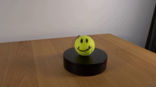
视觉工具实际返回图片 2
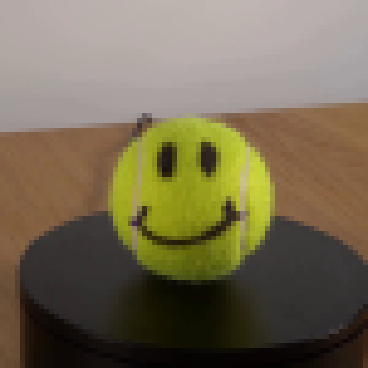
视觉工具实际返回图片 3
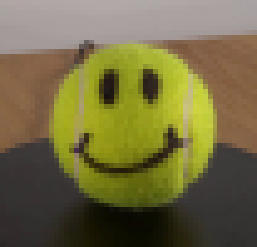
视觉工具实际返回图片 4
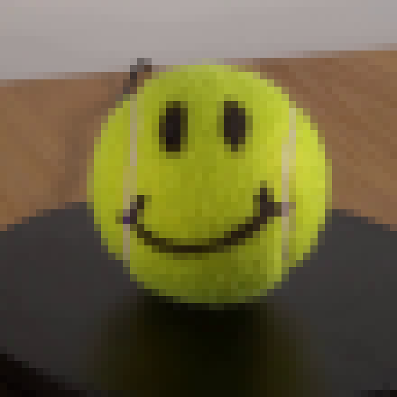
视觉工具实际返回图片 5
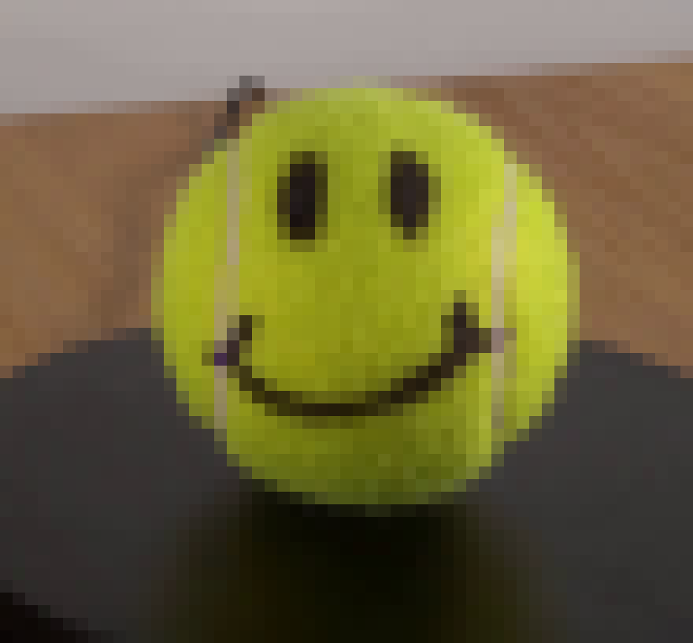
视觉工具实际返回图片 6
视觉工具实际返回图片 7
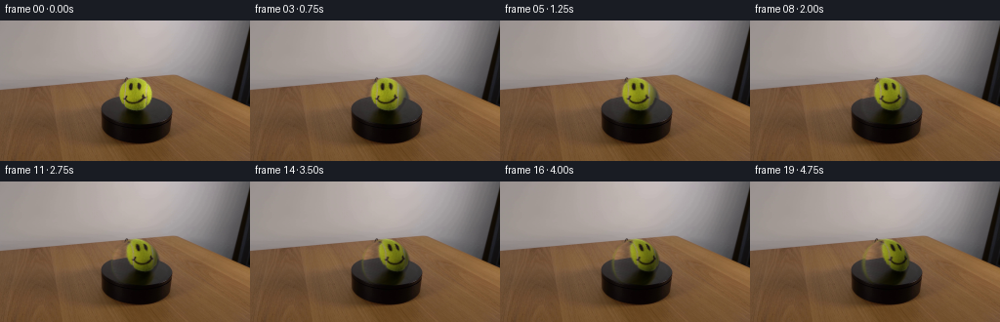
视觉工具实际返回图片 8

视觉工具实际返回图片 9
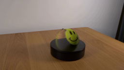
视觉工具实际返回图片 10
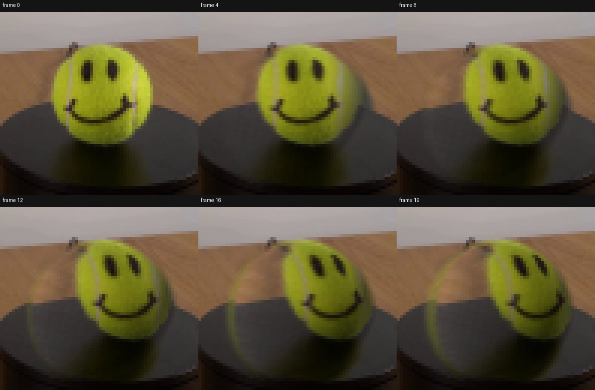
视觉工具实际返回图片 11
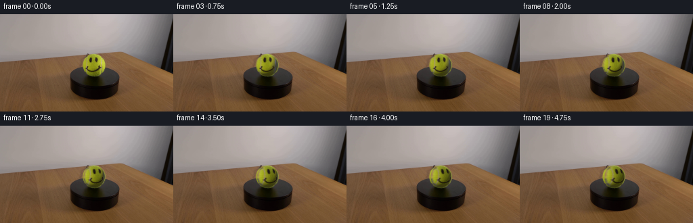
视觉工具实际返回图片 12

视觉工具实际返回图片 13
视觉工具实际返回图片 14
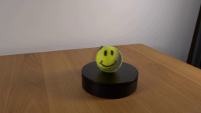
视觉工具实际返回图片 15
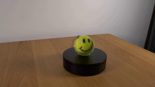
视觉工具实际返回图片 16
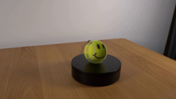
视觉工具实际返回图片 17
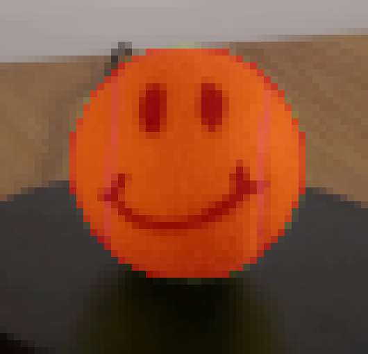
视觉工具实际返回图片 18
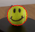
视觉工具实际返回图片 19
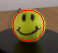
视觉工具实际返回图片 20
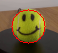
视觉工具实际返回图片 21
视觉工具实际返回图片 22
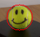
视觉工具实际返回图片 23

视觉工具实际返回图片 24
视觉工具实际返回图片 25

视觉工具实际返回图片 26
视觉工具实际返回图片 27
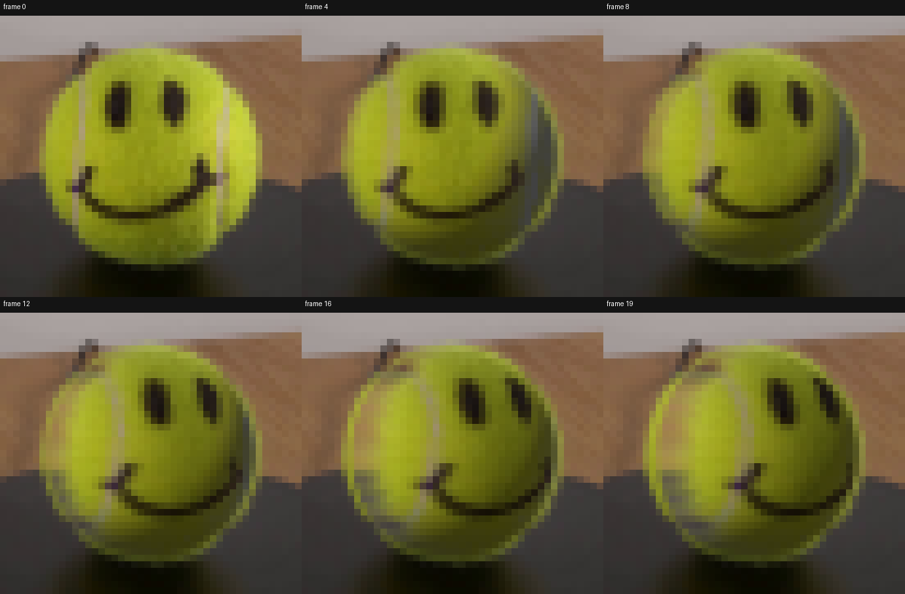
保存候选 3 份；完成命令 94 次；可验证图片返回 27 张。原始 API 响应与完整日志保留在本地。